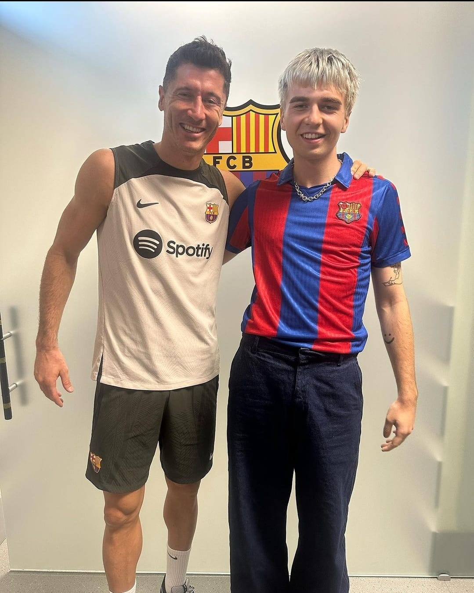

Strój uczniowski według mnie powinien wyglądać następująco:
Uczeń do wyboru powinień mieć 2 warianty:

Ubiór numer 1 (po lewej): Czarno-biała koszulka FC Barcelony, krótkie spodenki z logiem Barcelony oraz sportowe buty i skarpetki
Ubiór numer 2 (po prawej): Czerwono-niebieska koszulka Barcelony, granatowe jeansy.